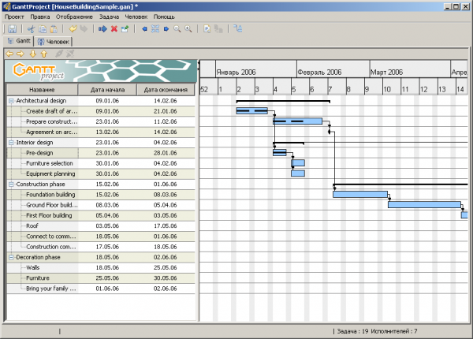
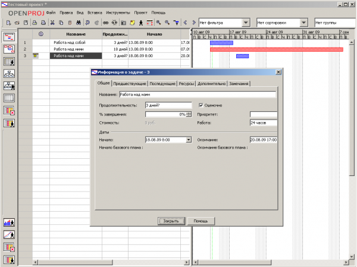
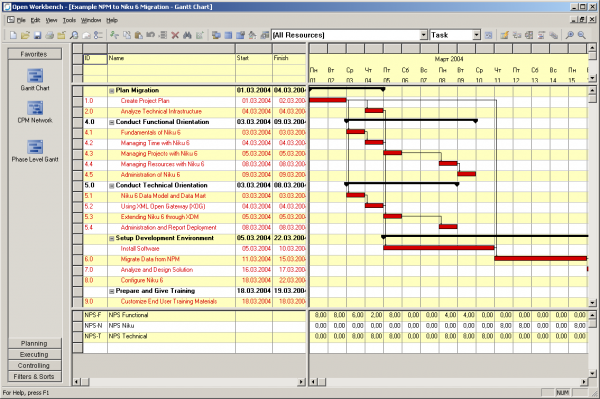

Бесплатные программы для управления проектами. Обмозговать свободно.
14.08.2009 21:45
Современный менеджмент немыслим без планирования и контроля за выполнением крупных проектов, поэтому в статье будут представлены программы, призванные помочь в разработке проектов и мониторинге реализации больших дел. Совсем недавно ПО такого рода стоило очень дорого, порой цена некоторых продуктов превышала несколько тысяч долларов. А теперь появились открытые и бесплатные программы управления проектами, по функциональности вплотную приблизившиеся к коммерческим аналогам. Они позволяют установить зависимость между работами, разбить задачу на несколько подзадач и выяснить, какие из них могут выполняться параллельно, а также способны осуществлять контроль за расходованием ресурсов. Причем некоторые из этих программ поддерживают режим коллективной работы.
GanttProject
Для тех, кому нужны более серьезные инструменты управления проектами, разработаны десятки коммерческих программ стоимостью от двухсот до нескольких тысяч долларов. В то же время программа GanttProject, будучи совершенно бесплатной, по функциональности уже вплотную приблизилась к коммерческим аналогам.
GanttProject предназначена для создания расписаний и отслеживания хода выполнения проекта с помощью диаграмм Ганта и применяемых ресурсов. Причем предполагается, что пользователь хотя бы в общих чертах знаком с такими методами планирования. Если же нет, то стоит сначала просмотреть Wikipedia (http://en.wikipedia.org/wiki/Gantt_chart ) или познакомиться с соответствующей литературой.

GanttProject дает возможность создать для проекта дерево задач, выделить на каждую из них определенное количество времени и закрепить за ней людские ресурсы. В программе указываются имена исполнителей и их контактные данные.
Затем можно установить зависимость между отдельными задачами. Например, задача «Возведение стены» не начнется до тех пор, пока не завершится задача «Укладка фундамента» и т. д. На основе всех данных GanttProject генерирует графическое представление проекта в виде диаграммы Ганта для отображения задач и диаграммы использования ресурсов.
Разумеется, полученные диаграммы можно изменять, распечатывать, генерировать PDF- и HTML-отчеты. Более того, программа умеет обмениваться данными с Microsoft Project (в форматах MP и XML) и программами обработки электронных таблиц. Это делает GanttProject совместимой не только с флагманом индустрии, но и с другими аналогичными программами, поскольку в большинстве случаев они стремятся поддерживать импорт в формате Microsoft Project. Мне, например, удалось открыть проект, разработанный в GanttProject, в другой программе, не менее мощной, — Open Workbench.
Вообще, существует довольно много коммерческих и открытых программ для управления проектами. Одни более функциональны, другие просто лучше выглядят. Каковы же преимущества GanttProject по сравнению с коммерческими пакетами?
Достойный (и постоянно растущий) набор функций. Его можно считать оптимальным для большинства пользователей, ведь исследования показывают, что 80% пользователей Microsoft Project задействуют не более 20% его функций.
Простота освоения. Не понадобятся объемные руководства, чтобы работать с GanttProject. Если пользователь имеет представление о целях проекта, фазах выполнения, задачах и их зависимостях, то за считанные часы станет экспертом по GanttProject. Разработчики не оставили ему ни единого шанса зайти в тупик — в стандартную поставку GanttProject входят великолепный справочник и очень показательный пример проекта «Постройка дома».
Стоимость. Коммерческие программы управления проектами недешевы, а GanttProject бесплатен для любых применений. Пожалуй, дешевле GanttProject может обойтись только та программа, за использование которой разработчики готовы платить деньги.
Кроссплатформенность. GanttProject написан на языке Java и работает под
управлением Windows, Linux, Mac OS X и других систем, где поддерживается Java.
Открытый исходный текст. Каждый может доработать GanttProject с учетом своих нужд, реализовать новые функции и добавить специализированную отчетность.
Локализация. Большая часть программы (за исключением руководства пользователя и нескольких советов дня) переведена на русский язык. Кстати, некоторые переведенные советы радуют предельной простотой изложения, например: «Диаграмму можно таскать мышой влево и вправо».
OpenProj — бесплатный аналог MS Project
Так же как и GanttProject, программа OpenProj написана на Java и работает на любой аппаратно-программной платформе, включая Windows, Linux и Mac. Она выглядит, пожалуй, даже более мощной благодаря богатому арсеналу средств для анализа проектов. В ней доступны не только диаграммы Ганта, но и сетевые графики (PERT), диаграммы освоенных объемов работ и использованных ресурсов (WBS и RBS), а также фактических затрат (Earned Value). Разработчики позиционируют OpenProj как полноценную замену Microsoft Project и другим коммерческим аналогам.

Компания Projity распространяет OpenProj совершенно бесплатно с открытым исходным текстом. Видимо, персональная программа OpenProj используется в качестве «зонтичного бренда» для более мощной системы Project on Demand (POD), предназначенной для коллективной работы над проектами. Обе системы строятся на одной и той же базе исходных текстов, поэтому OpenProj и обладает такими недюжинными аналитическими способностями.
OpenProj пользуется успехом у специалистов по всему миру — после первого выпуска программы за несколько недель с сайта разработчиков было переписано более 150 тыс. копий. И это неудивительно, ведь OpenProj — действительно мощная система управления проектами. Она переведена на множество языков, в том числе на русский, и умеет работать с файлами форматов Microsoft Project и Gnome Planner. Разработчики утверждают, что переход на OpenProj не займет много времени и усилий, но на практике дела обстоят несколько иначе.
Так, по удобству работы OpenProj явно уступает другим программам — в стандартной поставке нет ни файлов помощи, ни примеров. По внешнему оформлению она отдаленно напоминает MS Project, но большие кнопки для переключения режимов отображения проекта в левой панели сделаны настолько топорно, что возникает ощущение, будто работаешь с устаревшей версией. Да, проекты MS Project открываются в OpenProj просто великолепно, но импорт данных из других программ происходит уже не столь надежно. Например, так и не удалось открыть созданный в Gnome Planner проект.
Тем не менее многие эксперты сходятся во мнении, что OpenProj наиболее достойная альтернатива коммерческим приложениям. К примеру, Майкл Шаттлворт, «рулевой» Ubuntu, считает ее одним из ключевых пакетов для настольного Linux. Такого же мнения придерживаются топ-менеджеры и других известных дистрибутивов — Mandriva и SUSE.
Open Workbench — бесплатная программа управления проектами для Windows
Еще одним великолепным решением в области управления проектами может стать Open Workbench. Это довольно мощная программа, функционально близкая к коммерческим продуктам. Однако у нее есть существенные недостатки. Так, она работает только в системе Windows, не имеет перевода на русский язык и последний релиз датируется декабрем 2005 г. И все же это одна из самых красивых и удобных программ в данном обзоре. В ней легко открыть проекты, сделанные в GanttProject и экспортированные в MS Project XML, правда, затем все же требуются небольшие исправления.

Программу отличает бережное использование экранного пространства. В одном окне, поделенном на фреймы, помещаются дерево задач, диаграмма Ганта и список людских ресурсов. В левой части окна предустановлены режимы просмотра, а также допускается создавать собственные.
Надо сказать, что Open Workbench очень гибкий и простой в освоении инструмент. Имея базовые знания английского, нетрудно быстро научиться работать в этой программе. В ее стандартный дистрибутив входит обширная справочная система, а на сайте представлены примеры и руководство пользователя в форматах MS Word и Adobe Acrobat.
Gnome Planner — компонент Gnome Office для управления проектами
Разработчики Gnome Planner также не торопятся с выпуском новых версий своей системы управления проектами. Последняя из них, для работы под управлением Windows, была собрана в конце 2006 г. По возможностям Gnome Planner находится на уровне GanttProject, но функционирует немного быстрее. Для использования Gnome Planner for Windows понадобится установить библиотеку GTK+, имеющуюся, например, на сайте GIMP for Windows.Когда эта программа работает под управлением Windows, то имеет те же ограничения, что и другие приложения, написанные на GTK+. Например, функции копирования вставки и замены приходится использовать через контекстное меню мыши или систему меню приложения.